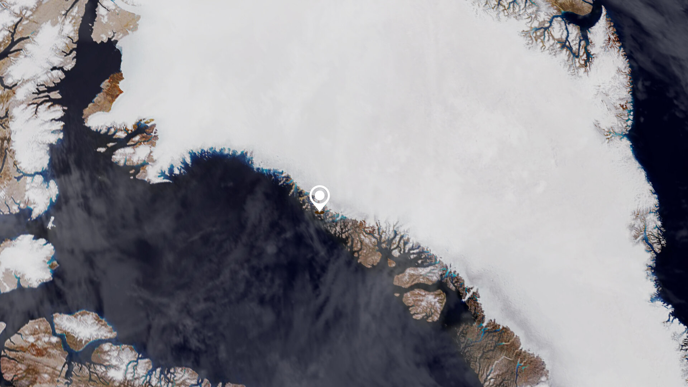
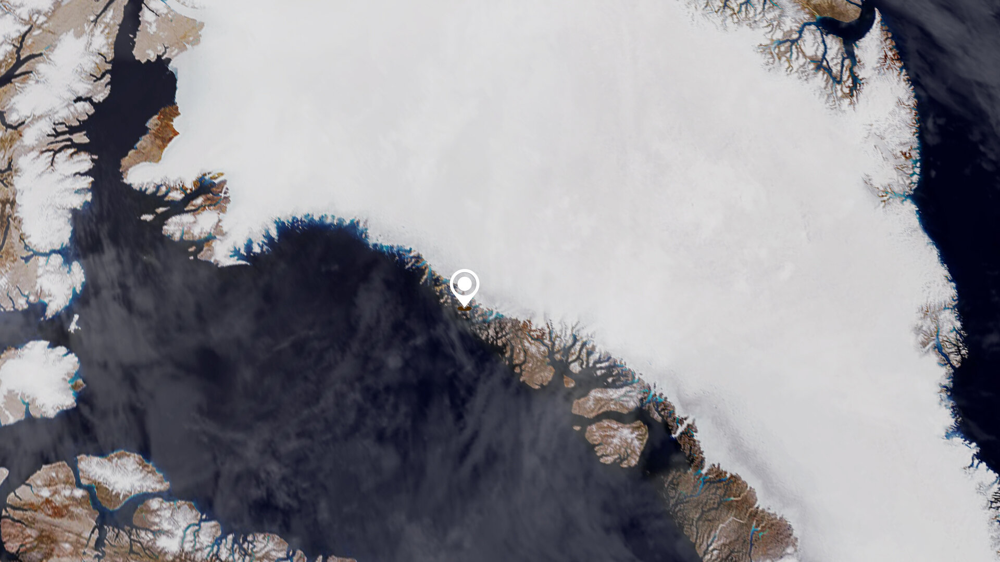

Earth from Space: Melt ponds in West Greenland
During spring and summer, as the air warms up and the sun beats down on the Greenland Ice Sheet, melt ponds pop up. Melt ponds are vast pools of open water that form on both sea ice and ice sheets and are visible as turquoise-blue pools of water in this Copernicus Sentinel-2 image.
Click on the image below to explore it in its full resolution.
When snow and ice melt atop glaciers, water flows in channels and streams and collects in depressions on the surface. These melt ponds can speed up the melting of the surrounding ice since they greatly reduce the ice’s ability to reflect sunlight. This can create a positive feedback where an increasing number of melt ponds absorb more heat which causes ice cover to melt even faster. In this image, captured on 29 August 2022, melt ponds in the province of Avannaata can be easily spotted from space as they are usually much darker than the surrounding ice. In some ponds, chunks of ice float atop the pond’s waters.
The bay visible here is Sugar Loaf Bay (an indentation of the northeast Baffin Bay) in the Upernavik Archipelago. The archipelago extends from the northwest coast of Sigguup Nunaa peninsula to the southern end of Melville Bay.
The Greenland Ice Sheet is the largest ice mass in the northern hemisphere. It extends 2220 km north-south with an average thickness of around 1500 m and spans 1100 km at its widest point.
As most of the northern hemisphere baked under a prolonged heatwave this summer, Greenland has been hit with an unusual late-season heatwave and melt event in early September – the kind of melt that usually occurs in the middle of summer.
The first day of September typically marks the end of the Greenland melt season, as the sun moves lower in the sky with temperatures usually cooling. However, at the beginning of September 2022, temperatures began to rise again when a strong air pressure region parked at the southeast edge of Greenland and drew warmer air northwards across Baffin Bay and the west coast of Greenland.
This led to meltwater runoff, the amount of surface water entering the ocean, to increase with its extensive melting contributing to global sea level rise – which impacts the millions of people living in coastal communities.
In a recent paper published in Nature Climate Change, scientists found that major sea-level rise from the melting of the Greenland ice cap is now ‘inevitable’ even if the burning of fossil fuels were to halt overnight. Using satellite observations of Greenland ice loss and ice cap from 2000 to 2019, the team found the losses will lead to a minimum rise of 27 cm regardless of climate change.
Earth observation satellites are key to monitoring ice as they carry instruments that measure changes in the thickness of the ice sheets, fluctuations in the speed of the outlet glaciers and even small changes in Earth’s gravity field caused by melting ice as well as sea-level rise.
This is image is also featured on the Earth from Space video programme.
 

Access the video